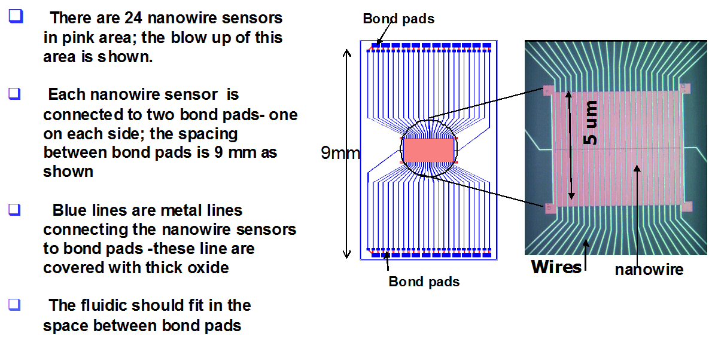

Silicon Nanowire notes
Bioelectronics project notes
A: This

Q: What makes this technology novel?
A:
No other "studies has investigated the effect of ionic concentration
of the solution on pH measurement sensitivity."
"The pH sensitivity is shown to be independent of the buffer
concentration."
ionic concentration of the
solution and the buffer concentration?So the novel idea appears to be using a bilayer SiO2/HfO2
dielectric stack
where the HfO2 (Halfnium Oxide) layer is the sensing surface in concact with
the buffer solution and the SiO2 forms the interfacial layer
at the silicon channel. Using HfO2 as the sensing surface has
an important advantage over SiO2: pH sensitivity is higher
and is independent of the buffer concentration.
not only has excellent ph sensing properties but is also
chemically inert in most acidic and basic solutions with the exception of
hydrofluoric acid based solutions